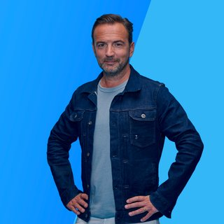

Programmering Radio Veronica
-
Oh Wat Een Nacht
 00:00 - 04:00
00:00 - 04:00
Je hoort de beste muziek van Radio Veronica non-stop in Oh Wat Een Nacht!

Radio Veronica

-
The Warming Up
04:00 - 06:00
Tussen 04:00 en 06:00 uur word je wakker met Lisanne Bronkhorst in The Warming Up.

Lisanne Bronkhorst
-
Ekdom in de Morgen
06:00 - 09:00
Opstaan met Ekdom in de Morgen betekent opstaan met een lach! Elke werkdag sleurt Gerard Ekdom je mee door de ochtend: van 06:00 tot 09:00 uur.
Gerard Ekdom
-
Goud van Oud
09:00 - 12:00
Marisa draait elke werkdag van 09:00 tot 12:00 uur de muziek waar jij van houdt in Goud van Oud!

Marisa Heutink
-
Sander Hoogendoorn
12:00-14:00
Van 12:00 tot 14:00, speciaal voor jou, heeft Sander Hoogendoorn de beste playlist voor tijdens de lunch.

Sander Hoogendoorn
-
De Bonanza
14:00-16:00
De Bonanza met Rob Stenders is elke werkdag van 14:00 tot 16:00 uur te horen op Radio Veronica. Jij bepaalt welke muziek er wordt gedraaid. Vraag jouw favoriete platen aan via de gratis Radio Veronica app.

Rob Stenders
-
Wout & Frank
16:00-19:00
De middagshow van Radio Veronica met Wouter van der Goes en Frank van 't Hof.

Wouter van der Goes & Frank van 't Hof
-
Martijn Muijs
19:00-21:00
Je hoort Martijn Muijs elke maandag t/m donderdag 19:00 - 21:00 uur met de beste muziek voor het begin van je avond.

Martijn Muijs
-
Frank tot Laat
21:00-23:59
Sluit je dag af met Frank van der Lende. Met live muziek, goede gesprekken en de fijnste muziek voor de late avond.

Frank van der Lende
SLAM
- 1
- 2
- 3
- 4
- 5
- 6
- 7
100% NL
- 1
- 2
- 3
- 4
- 5
- 6
- 7
- 8
SLAM
- 1
- 2
- 3
- 4